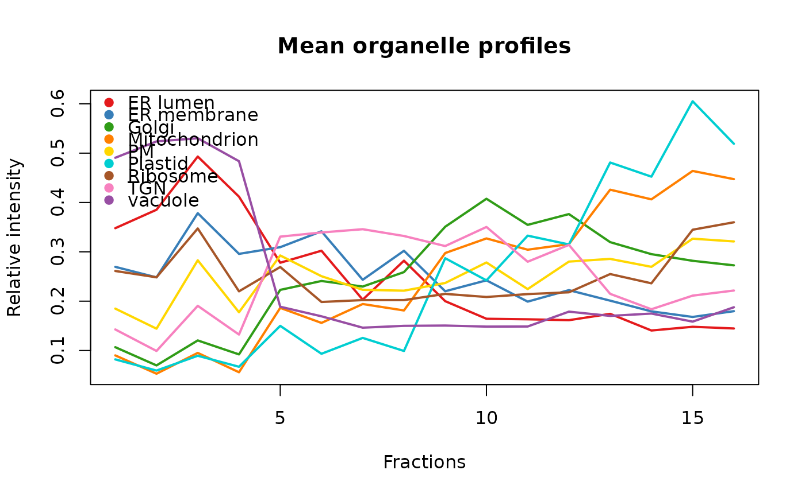

A function to calculate average marker profiles.
See also
The mrkHClust function to produce a
hierarchical cluster.
Examples
library("pRolocdata")
data(dunkley2006)
mrkConsProfiles(dunkley2006)
#> M1F1A M1F4A M1F7A M1F11A M1F2B M1F5B
#> ER lumen 0.34790193 0.2778745 0.2000145 0.1743091 0.49310871 0.2030229
#> ER membrane 0.26954542 0.3094276 0.2201106 0.2010234 0.37832533 0.2433542
#> Golgi 0.10673314 0.2228814 0.3508332 0.3196275 0.12041797 0.2295954
#> Mitochondrion 0.09008695 0.1864223 0.2975309 0.4259333 0.09515331 0.1942079
#> PM 0.18493326 0.2926176 0.2368301 0.2856681 0.28288228 0.2230173
#> Plastid 0.08200481 0.1499930 0.2870436 0.4809921 0.08937813 0.1255232
#> Ribosome 0.26117895 0.2692538 0.2147402 0.2549371 0.34736379 0.2021619
#> TGN 0.14267536 0.3307792 0.3116818 0.2148358 0.19059969 0.3458225
#> vacuole 0.49060776 0.1887146 0.1505610 0.1701423 0.53019938 0.1462491
#> M1F8B M1F11B M2F1A M2F4A M2F7A M2F11A
#> ER lumen 0.1632424 0.1405430 0.38528500 0.30223829 0.1643254 0.1480823
#> ER membrane 0.1990741 0.1793234 0.24821447 0.34158018 0.2421851 0.1680087
#> Golgi 0.3546319 0.2952720 0.06979120 0.24087721 0.4075620 0.2818049
#> Mitochondrion 0.3043015 0.4063777 0.05297090 0.15590611 0.3271555 0.4639317
#> PM 0.2244869 0.2695825 0.14423628 0.25059815 0.2784118 0.3266328
#> Plastid 0.3327774 0.4523463 0.05931388 0.09338429 0.2421152 0.6051806
#> Ribosome 0.2143384 0.2361688 0.24835921 0.19839005 0.2084512 0.3447833
#> TGN 0.2799308 0.1836193 0.09905576 0.33923838 0.3503657 0.2112014
#> vacuole 0.1486659 0.1748985 0.52382333 0.16930881 0.1484392 0.1585148
#> M2F2B M2F5B M2F8B M2F11B
#> ER lumen 0.41181264 0.28204521 0.1614619 0.1446546
#> ER membrane 0.29584151 0.30213218 0.2223314 0.1797237
#> Golgi 0.09211270 0.25888696 0.3764906 0.2726121
#> Mitochondrion 0.05592373 0.18116613 0.3156597 0.4472919
#> PM 0.17748167 0.22124237 0.2801925 0.3210563
#> Plastid 0.06704418 0.09906525 0.3149460 0.5190335
#> Ribosome 0.21993053 0.20215705 0.2179611 0.3598775
#> TGN 0.13232952 0.33208846 0.3140628 0.2215500
#> vacuole 0.48365443 0.14997229 0.1787520 0.1876555
mrkConsProfiles(dunkley2006, method = median)
#> M1F1A M1F4A M1F7A M1F11A M1F2B M1F5B
#> ER lumen 0.34319050 0.2788335 0.1992085 0.1686665 0.49232500 0.202000
#> ER membrane 0.26882600 0.3099780 0.2194130 0.2012500 0.37556200 0.242143
#> Golgi 0.10333350 0.2147500 0.3562500 0.3187180 0.11191650 0.229143
#> Mitochondrion 0.09033330 0.1876670 0.2993330 0.4210000 0.08831580 0.191571
#> PM 0.17800000 0.2930000 0.2347515 0.2852500 0.28287250 0.225200
#> Plastid 0.08338885 0.1541700 0.2874090 0.4760250 0.07488665 0.127725
#> Ribosome 0.26450000 0.2740000 0.2120000 0.2434000 0.36000000 0.203000
#> TGN 0.16450000 0.3310000 0.3055000 0.2100000 0.19585700 0.357333
#> vacuole 0.49900000 0.1898570 0.1440000 0.1641430 0.53900000 0.143250
#> M1F8B M1F11B M2F1A M2F4A M2F7A M2F11A
#> ER lumen 0.1628330 0.1387500 0.37987800 0.302522 0.1634445 0.1510695
#> ER membrane 0.1982310 0.1800000 0.24625000 0.340711 0.2420000 0.1645710
#> Golgi 0.3605835 0.2973330 0.06733335 0.227000 0.4116250 0.2769165
#> Mitochondrion 0.3036470 0.4071870 0.04750000 0.153333 0.3285000 0.4670000
#> PM 0.2251835 0.2734000 0.13747500 0.248750 0.2732500 0.3357500
#> Plastid 0.3395450 0.4584865 0.05180950 0.086075 0.2419855 0.6028000
#> Ribosome 0.2115000 0.2312220 0.24800000 0.220000 0.2105000 0.2925000
#> TGN 0.2783330 0.1766670 0.10800000 0.314333 0.3480000 0.2112500
#> vacuole 0.1440000 0.1720000 0.53186700 0.167143 0.1488000 0.1587500
#> M2F2B M2F5B M2F8B M2F11B
#> ER lumen 0.4166665 0.286537 0.1582335 0.1319000
#> ER membrane 0.2960000 0.302667 0.2225000 0.1693000
#> Golgi 0.0878500 0.255450 0.3808335 0.2707855
#> Mitochondrion 0.0555833 0.176105 0.3158570 0.4507370
#> PM 0.1698125 0.218000 0.2798335 0.3248750
#> Plastid 0.0602500 0.093250 0.3203335 0.5308750
#> Ribosome 0.2450000 0.215000 0.2196670 0.3135000
#> TGN 0.1370000 0.326750 0.2977000 0.2162000
#> vacuole 0.4816670 0.146000 0.1807500 0.1907500
mm <- mrkConsProfiles(dunkley2006)
## Reorder fractions
o <- order(dunkley2006$fraction)
## Plot mean organelle profiles using the
## default pRoloc colour palette.
matplot(t(mm[, o]), type = "l",
xlab = "Fractions", ylab = "Relative intensity",
main = "Mean organelle profiles",
col = getStockcol(), lwd = 2, lty = 1)
## Add a legend
addLegend(markerMSnSet(dunkley2006), where = "topleft")
